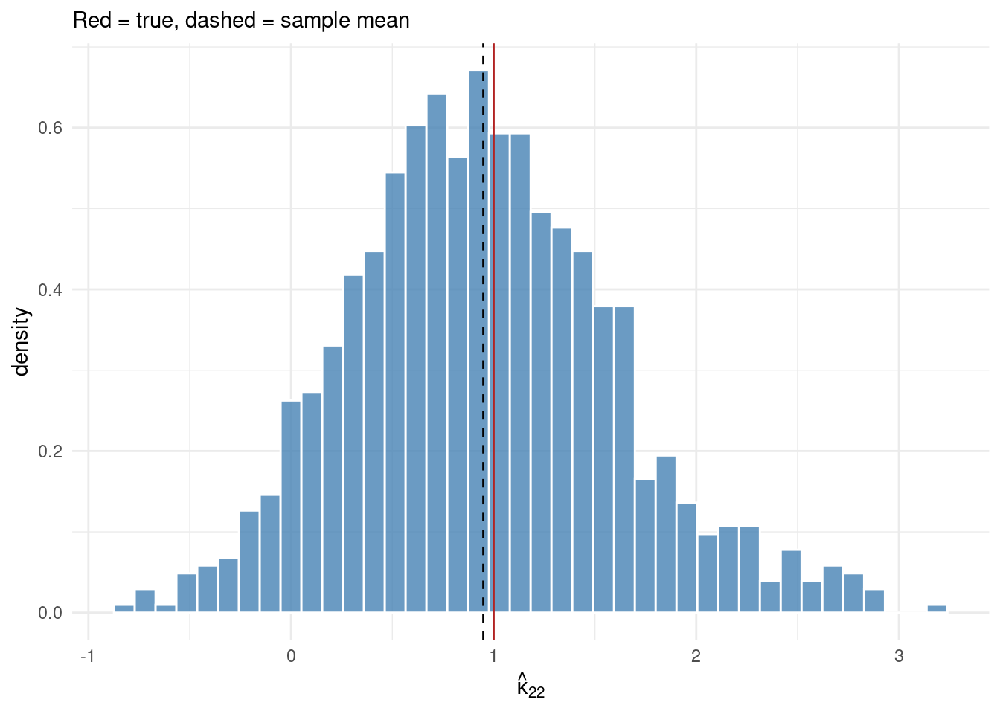
8 Independence Test
8.1 Classical Theory
For jointly Gaussian \((X, Y)\), zero correlation and independence are equivalent, so testing \(H_0: \rho = 0\) is also a test of \(H_0: X \perp Y\). The statistic \(T = \sqrt{n-2}\,\hat\rho / \sqrt{1 - \hat\rho^2}\) follows an exact \(t_{n-2}\) null distribution.
Without the Gaussian assumption, \(\rho = 0\) no longer implies independence — for example, \(X \sim N(0,1)\) and \(Y = X^2\) satisfy \(\operatorname{Cov}(X, Y) = 0\) but \(X \not\perp Y\). Two approaches handle the non-Gaussian case:
- Permutation test. Permuting \(Y\) breaks any dependence on \(X\) while preserving marginals, giving an exact test of \(H_0: X \perp Y\) under any distribution.
- Asymptotic test of independence. Under \(H_0: X \perp Y\), the errors are independent, so \(\kappa_{22} = 1\) and \(\sqrt{n}\,\hat\rho \xrightarrow{d} N(0, 1)\).
For the weaker null \(H_0: \rho = 0\) without assuming independence, \(\kappa_{22}\) need not equal 1, and the asymptotic variance is \[ v^2 = \frac{1}{n} \left(\omega_x^2 + \omega_y^2 + \kappa_{22} + \frac{5}{2}\right). \] A robust test plugs in \(\hat\kappa_{22}\).
8.2 Estimating \(\kappa_{22}\) via \(V\)
8.2.1 Estimating \(\kappa_{22}\) via \(V_{xy}\)
Let \(s_i^{(k)} = (X_i - X_{i+k})(Y_i - Y_{i+k})\) and \(S_i = \frac{s_i^{(1)} + s_{i+1}^{(1)} - s_i^{(2)}}{2}\) as in the Multiplier Bootstrap chapter, so that \[ \boxed{\bar{S} = \frac{1}{n}\sum_{i=1}^n S_i = \frac{2T_1(X,Y) - T_2(X,Y)}{2n} = \hat\sigma_{xy}.} \] Since \(S_i\) depends only on indices \(i-2, i-1, i\), terms at lags \(\ge 3\) are independent, so \[ \operatorname{Var}(\bar{S}) = \frac{1}{n^2}\!\left[\sum_i \operatorname{Var}(S_i) + 2\sum_i \operatorname{Cov}(S_i, S_{i+1}) + 2\sum_i \operatorname{Cov}(S_i, S_{i+2})\right]. \] Replacing each population quantity with its sample analog gives the lag-2 variance estimate \[ V := \widehat{\operatorname{Var}}(\bar{S}) = \frac{1}{n^2}\!\left(\sum_{i=1}^n S_i^2 + \sum_{i=1}^n (S_i S_{i+1} + S_{i+1} S_i) + \sum_{i=1}^n (S_i S_{i+2} + S_{i+2} S_i)\right), \] or in matrix form, writing \(\mathbf{S} = (S_1, \ldots, S_n)^\top\), \[ \boxed{V = \frac{1}{n^2}\,\mathbf{S}^\top(I + C_1 + C_1^\top + C_2 + C_2^\top)\mathbf{S}.} \]
Since \(\bar S = (2T_1 - T_2)/(2n)\), we have \(V \approx \operatorname{Var}(2T_1 - T_2)/(4n^2)\). The variance on the right has a general closed form; under \(H_0\) (\(\sigma_{xy} = 0\)) it simplifies so we can solve for \(\kappa_{22}\) from \(V\).
Derivation: \(\operatorname{Var}(\bar{S})\) from \(\Sigma_Z\)
Since \(\bar{S} = (2T_1 - T_2)/(2n)\), \[ \operatorname{Var}(\bar{S}) = \frac{1}{4n^2}\bigl(4[\Sigma_Z]_{55} - 4[\Sigma_Z]_{56} + [\Sigma_Z]_{66}\bigr). \] The general \(\Sigma_Z\) entries from the Z-Test chapter are \[[\Sigma_Z]_{55} = 2n\sigma_x^2\sigma_y^2(2\kappa_{22}+1) - 2n\sigma_{xy}^2 + 2n\sigma_y^2\omega_x^2 + 2n\sigma_x^2\omega_y^2 + 4n\sigma_{xy}\omega_{xy},\] \[[\Sigma_Z]_{56} = 4n(\sigma_x^2\sigma_y^2\kappa_{22} - \sigma_{xy}^2) + 2n\sigma_y^2\omega_x^2 + 2n\sigma_x^2\omega_y^2 + 4n\sigma_{xy}\omega_{xy},\] \[[\Sigma_Z]_{66} = 2n\sigma_x^2\sigma_y^2(2\kappa_{22}+1) - 2n\sigma_{xy}^2 + 4n\sigma_y^2\omega_x^2 + 4n\sigma_x^2\omega_y^2 + 8n\sigma_{xy}\omega_{xy}.\] Substituting and collecting terms gives the general expression \[\operatorname{Var}(\bar{S}) = \frac{1}{2n}\bigl[(2\kappa_{22}+5)\sigma_x^2\sigma_y^2 + 3\sigma_{xy}^2 + 4\sigma_{xy}\omega_{xy} + 2\sigma_y^2\omega_x^2 + 2\sigma_x^2\omega_y^2\bigr].\] Under \(H_0\) (\(\sigma_{xy} = 0\)) the last two terms vanish, yielding \[\operatorname{Var}(\bar{S}) = \frac{1}{2n}\bigl[(2\kappa_{22}+5)\sigma_x^2\sigma_y^2 + 2\sigma_y^2\omega_x^2 + 2\sigma_x^2\omega_y^2\bigr]. \qquad\square\]
Since \(V \approx \operatorname{Var}(\bar{S})\), substituting the general expression and solving gives \[\boxed{\hat\kappa_{22} = \frac{nV}{\hat\sigma_x^2\hat\sigma_y^2} - \frac{3}{2}\frac{\hat\sigma_{xy}^2}{\hat\sigma_x^2\hat\sigma_y^2} - \frac{2\hat\sigma_{xy}\hat\omega_{xy}}{\hat\sigma_x^2\hat\sigma_y^2} - \frac{\hat\omega_x^2}{\hat\sigma_x^2} - \frac{\hat\omega_y^2}{\hat\sigma_y^2} - \frac{5}{2}.}\] Under \(H_0\) (\(\hat\sigma_{xy} = 0\)) the middle two terms vanish, yielding \[\hat\kappa_{22} = \frac{nV}{\hat\sigma_x^2\hat\sigma_y^2} - \frac{\hat\omega_x^2}{\hat\sigma_x^2} - \frac{\hat\omega_y^2}{\hat\sigma_y^2} - \frac{5}{2}.\]
Simulation: Verifying \(\hat\kappa_{22}\) via \(V_{xy}\)
Scenario 2, \(L = 4\), Gaussian independent errors. Under independence \(\kappa_{22} = 1\) regardless of marginals.
Using \(\varepsilon_y = (\varepsilon_x^2 - 1)/\sqrt{2}\) with \(\varepsilon_x \sim N(0,1)\), giving \(\sigma_{xy} = 0\) and \(\kappa_{22} = 5\).
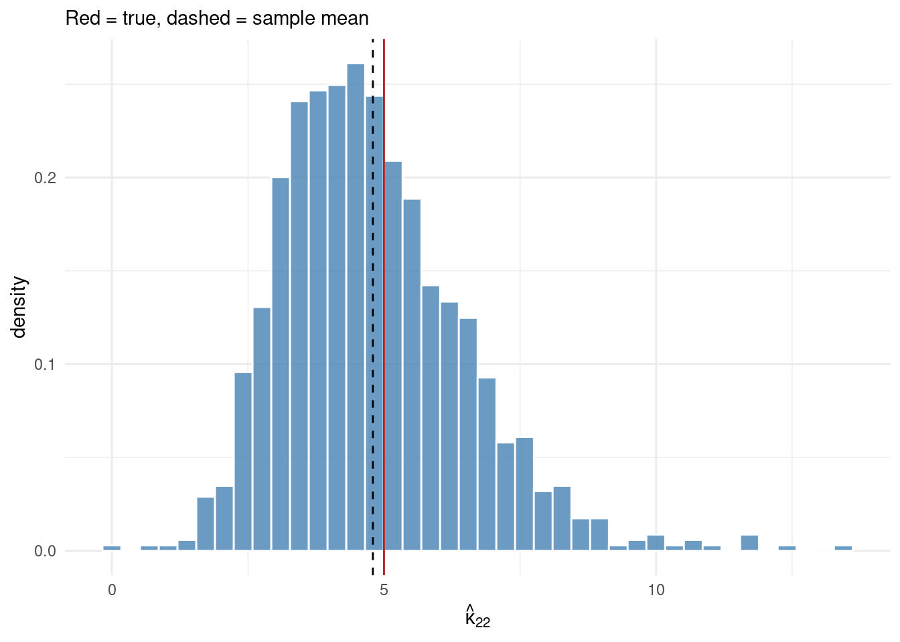
Using \(\varepsilon_y = \lambda(\varepsilon_x^2-1)/\sqrt{2} + \sqrt{1-\lambda^2}\,\eta\) with \(\varepsilon_x, \eta \stackrel{iid}{\sim} N(0,1)\), which gives \(\sigma_{xy} = 0\) and \(\kappa_{22} = 1 + 4\lambda^2\).
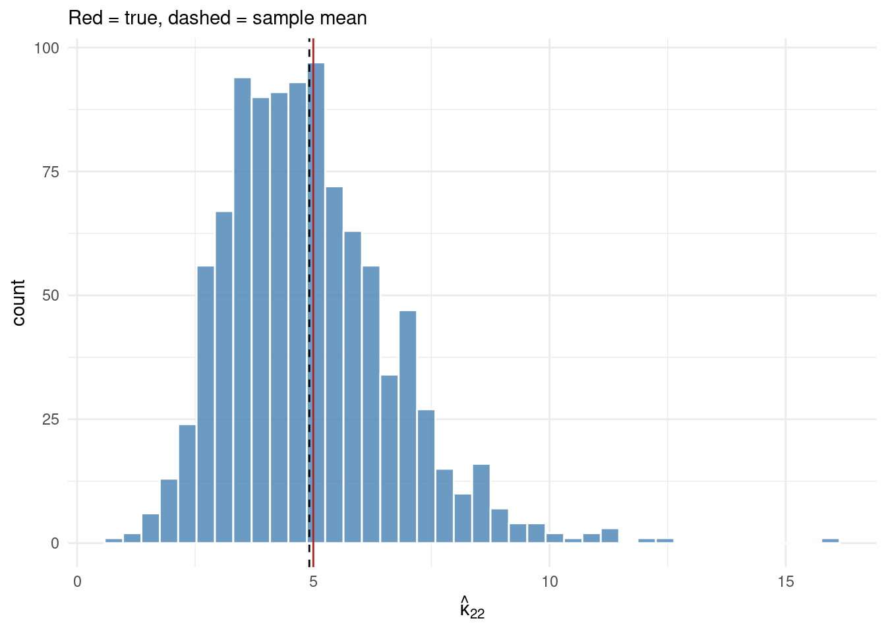
8.2.2 Estimating \(\kappa_{22}\) via \(V_{12}\)
An alternative estimator uses the cross-covariance \(V_{12} = \widehat{\mathrm{Cov}}(\bar S^{xx}, \bar S^{yy})\) in place of \(V_{xy}\). Since \(S_{xx} = (2T_1(X,X) - T_2(X,X))/(2n)\) and \(S_{yy} = (2T_1(Y,Y) - T_2(Y,Y))/(2n)\),
\[ \mathrm{Cov}(S_{xx}, S_{yy}) = \frac{1}{4n^2}\,\mathrm{Cov}\!\bigl(2T_1(X,X) - T_2(X,X),\; 2T_1(Y,Y) - T_2(Y,Y)\bigr). \]
Expanding by bilinearity gives a linear combination of the four cross-diagonal \(\Sigma_Z\) entries:
\[ 4\,[\Sigma_Z]_{T_1(X,X),T_1(Y,Y)} - 2\,[\Sigma_Z]_{T_1(X,X),T_2(Y,Y)} - 2\,[\Sigma_Z]_{T_2(X,X),T_1(Y,Y)} + [\Sigma_Z]_{T_2(X,X),T_2(Y,Y)}. \]
All four entries share the coefficient \(4n\sigma_x^2\sigma_y^2\) on \((\kappa_{22}-1)\); the \(\omega_{xy}\) terms cancel to \(16n\sigma_{xy}\omega_{xy}\) and the \(\sigma_{xy}^2\) terms collect to \(8n\sigma_{xy}^2\). Dividing through by \(4n^2\) gives the closed form
\[ \mathrm{Cov}(S_{xx}, S_{yy}) = \frac{1}{n}\!\left[\sigma_x^2\sigma_y^2(\kappa_{22}-1) + 2\sigma_{xy}^2 + 4\sigma_{xy}\omega_{xy}\right]. \]
Solving for \(\kappa_{22}\),
\[ \boxed{\hat\kappa_{22} = \frac{V_{12} - 8n\hat\sigma_{xy}^2 - 16n\hat\sigma_{xy}\hat\omega_{xy}}{4n\hat\sigma_x^2\hat\sigma_y^2} + 1,} \]
which under \(H_0: \rho = 0\) reduces to \(\hat\kappa_{22} = V_{12}/(4n\hat\sigma_x^2\hat\sigma_y^2) + 1\), free of all \(\omega\) corrections.
8.2.3 Estimating \(\kappa_{40}\) via \(V_{xx}\)
Applying the same construction to \((X, X)\) in place of \((X, Y)\): let \(s_i^{(k)} = (X_i - X_{i+k})^2\) and \(S_i^{xx} = (s_i^{(1)} + s_{i+1}^{(1)} - s_i^{(2)})/2\), so that \(\bar S^{xx} = (2T_1(X,X) - T_2(X,X))/(2n) = \hat\sigma_x^2\). Define \[ V_{xx} := \widehat{\operatorname{Var}}(\bar S^{xx}) = \frac{1}{n^2}\,(\tilde{\mathbf{S}}^{xx})^\top(I + C_1 + C_1^\top + C_2 + C_2^\top)\tilde{\mathbf{S}}^{xx}, \qquad \tilde S_i^{xx} = S_i^{xx} - \bar S^{xx}. \]
Derivation: \(\operatorname{Var}(\bar{S}^{xx})\) from \(\Sigma_Z\)
Since \(\bar{S}^{xx} = (2T_1(X,X) - T_2(X,X))/(2n)\), \[ \operatorname{Var}(\bar{S}^{xx}) = \frac{1}{4n^2}\bigl(4[\Sigma_Z]_{11} - 4[\Sigma_Z]_{12} + [\Sigma_Z]_{22}\bigr). \] Substituting the entries from the Z-Test chapter: \[[\Sigma_Z]_{11} = 4n\kappa_{40}\sigma_x^4 + 8n\sigma_x^2\omega_x^2,\] \[[\Sigma_Z]_{12} = 4n(\kappa_{40}-1)\sigma_x^4 + 8n\sigma_x^2\omega_x^2,\] \[[\Sigma_Z]_{22} = 4n\kappa_{40}\sigma_x^4 + 16n\sigma_x^2\omega_x^2.\] Collecting terms: \[\operatorname{Var}(\bar{S}^{xx}) = \frac{1}{n}\bigl[(\kappa_{40}+4)\sigma_x^4 + 4\sigma_x^2\omega_x^2\bigr]. \qquad\square\]
Since \(V_{xx} \approx \operatorname{Var}(\bar{S}^{xx})\), substituting and solving gives \[ \boxed{\hat\kappa_{40} = \frac{nV_{xx}}{\hat\sigma_x^4} - \frac{4\hat\omega_x^2}{\hat\sigma_x^2} - 4.} \] By symmetry (\(x \leftrightarrow y\)), the same construction applied to \((Y, Y)\) yields \(\hat\kappa_{04} = nV_{yy}/\hat\sigma_y^4 - 4\hat\omega_y^2/\hat\sigma_y^2 - 4\).
Simulation: Verifying \(\hat\kappa_{40}\)
Scenario 2, \(L = 4\), Gaussian errors (\(\kappa_{40} = 3\)).
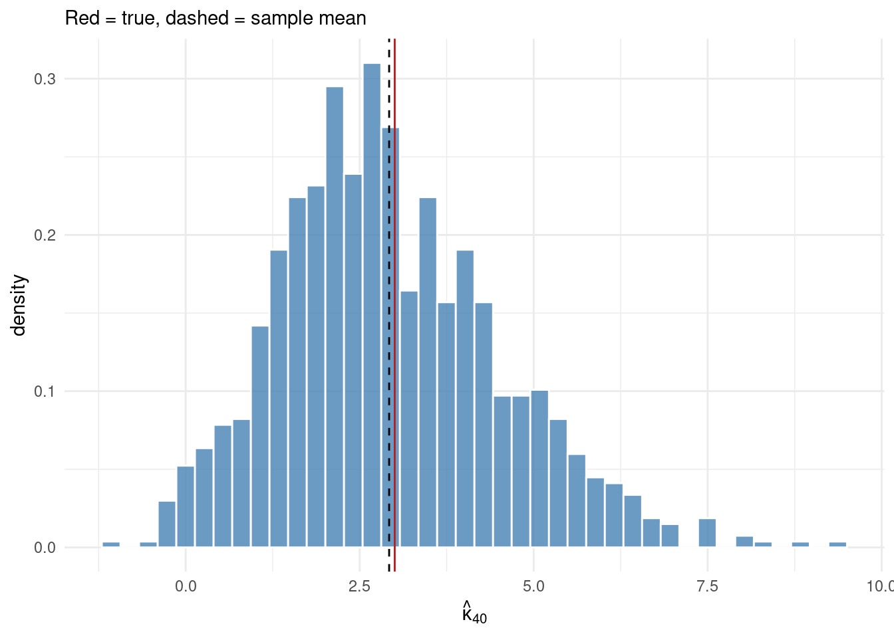
Scenario 2, \(L = 4\), exponential errors (\(\kappa_{40} = 9\)).
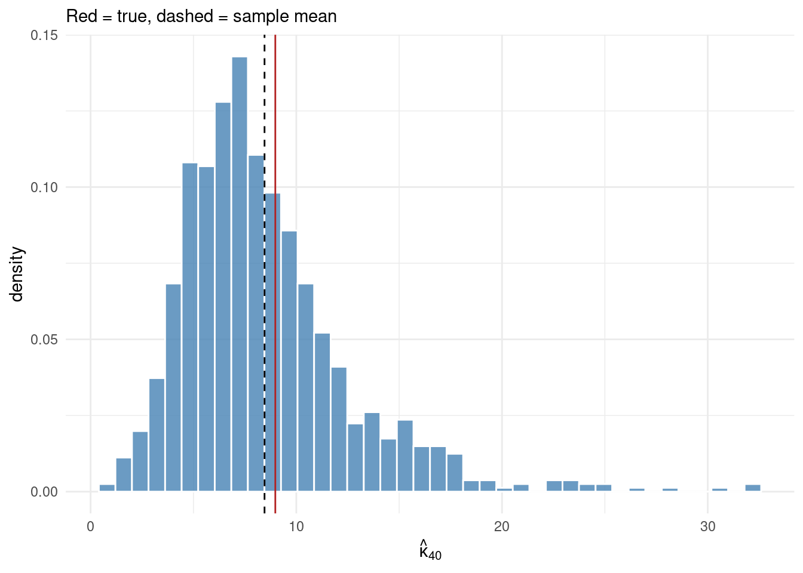
Using \(\varepsilon_x = \lambda(z^2-1)/\sqrt{2} + \sqrt{1-\lambda^2}\,w\) with \(z, w \stackrel{iid}{\sim} N(0,1)\), which gives \(\kappa_{40} = 12\lambda^4 + 3\).
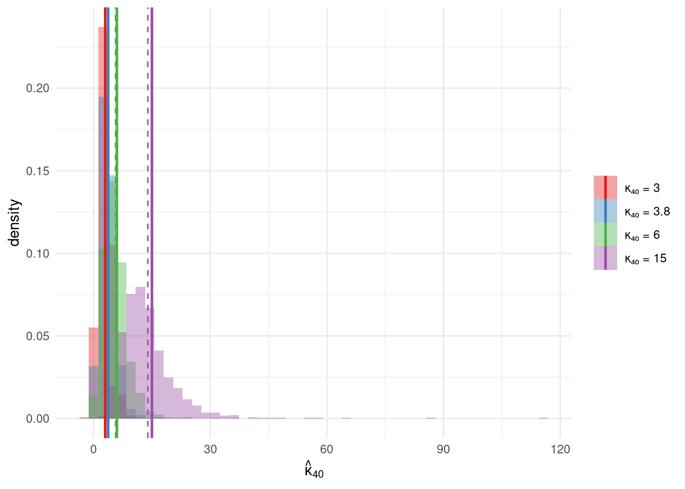
8.2.4 Estimating \(\kappa_{31}\) via \(C_{xx,xy}\)
The cumulant \(\kappa_{31}\) appears in the cross-covariances between the \((X,X)\) and \((X,Y)\) blocks of \(\Sigma_Z\). Define the lag-2 cross-covariance \[ C_{xx,xy} := \frac{1}{n^2}\,(\tilde{\mathbf{S}}^{xx})^\top(I + C_1 + C_1^\top + C_2 + C_2^\top)\tilde{\mathbf{S}}^{xy}, \qquad \tilde S_i^{xx} = S_i^{xx} - \bar S^{xx},\quad \tilde S_i^{xy} = S_i^{xy} - \bar S^{xy}, \] which estimates \(\operatorname{Cov}(\bar S^{xx}, \bar S^{xy})\).
Derivation: \(\operatorname{Cov}(\bar{S}^{xx}, \bar{S}^{xy})\) from \(\Sigma_Z\)
Since \(\bar{S}^{xx} = (2T_1(X,X) - T_2(X,X))/(2n)\) and \(\bar{S}^{xy} = (2T_1(X,Y) - T_2(X,Y))/(2n)\), \[ \operatorname{Cov}(\bar{S}^{xx}, \bar{S}^{xy}) = \frac{1}{4n^2}\bigl(4[\Sigma_Z]_{15} - 2[\Sigma_Z]_{16} - 2[\Sigma_Z]_{25} + [\Sigma_Z]_{26}\bigr). \] The relevant entries from the Z-Test chapter are \[[\Sigma_Z]_{15} = 4n\sigma_x^3\sigma_y\kappa_{31} + 4n\sigma_{xy}\omega_x^2 + 4n\sigma_x^2\omega_{xy},\] \[[\Sigma_Z]_{16} = 4n\sigma_x^3\sigma_y\kappa_{31} - 4n\sigma_x^2\sigma_{xy} + 4n\sigma_{xy}\omega_x^2 + 4n\sigma_x^2\omega_{xy},\] \[[\Sigma_Z]_{25} = 4n\sigma_x^3\sigma_y\kappa_{31} - 4n\sigma_x^2\sigma_{xy} + 4n\sigma_{xy}\omega_x^2 + 4n\sigma_x^2\omega_{xy},\] \[[\Sigma_Z]_{26} = 4n\sigma_x^3\sigma_y\kappa_{31} + 8n\sigma_{xy}\omega_x^2 + 8n\sigma_x^2\omega_{xy}.\] Collecting terms: \[\operatorname{Cov}(\bar{S}^{xx}, \bar{S}^{xy}) = \frac{1}{n}\bigl[\sigma_x^3\sigma_y\kappa_{31} + 4\sigma_x^2\sigma_{xy} + 2\sigma_{xy}\omega_x^2 + 2\sigma_x^2\omega_{xy}\bigr]. \qquad\square\]
Since \(C_{xx,xy} \approx \operatorname{Cov}(\bar{S}^{xx}, \bar{S}^{xy})\), substituting and solving gives \[ \hat\kappa_{31} = \frac{nC_{xx,xy}}{\hat\sigma_x^3\hat\sigma_y} - \frac{4\hat\sigma_{xy}}{\hat\sigma_x\hat\sigma_y} - \frac{2\hat\sigma_{xy}\hat\omega_x^2}{\hat\sigma_x^3\hat\sigma_y} - \frac{2\hat\omega_{xy}}{\hat\sigma_x\hat\sigma_y}. \] By symmetry (\(x \leftrightarrow y\)), the same construction with \(C_{yy,xy}\) yields \(\hat\kappa_{13}\).
Simulation: Verifying \(\hat\kappa_{31}\)
Scenario 2, \(L = 4\), Gaussian independent errors. Under independence \(\kappa_{31} = 0\).
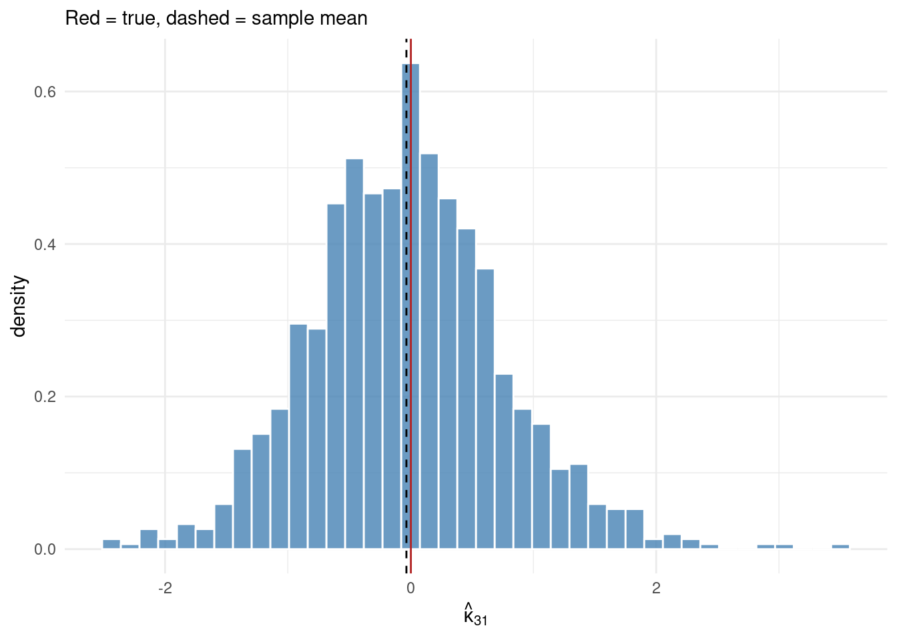
Using \(\varepsilon_y = \varepsilon_x\) with \(\varepsilon_x \sim N(0,1)\), giving \(\sigma_{xy} = \sigma_x^2\) and \(\kappa_{31} = \kappa_{40} = 3\).
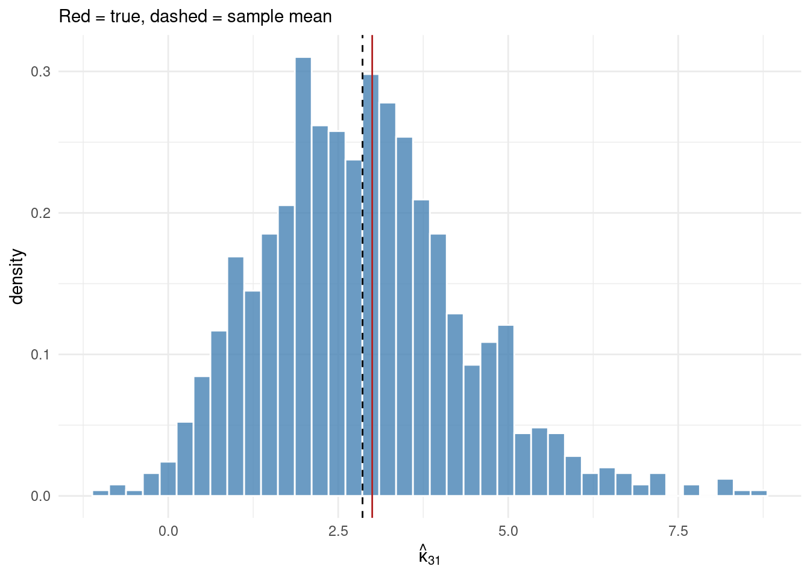
Using \(\varepsilon_y = \lambda\varepsilon_x + \sqrt{1-\lambda^2}\,\eta\) with \(\varepsilon_x, \eta \stackrel{iid}{\sim} N(0,1)\), which gives \(\kappa_{31} = 3\lambda\).
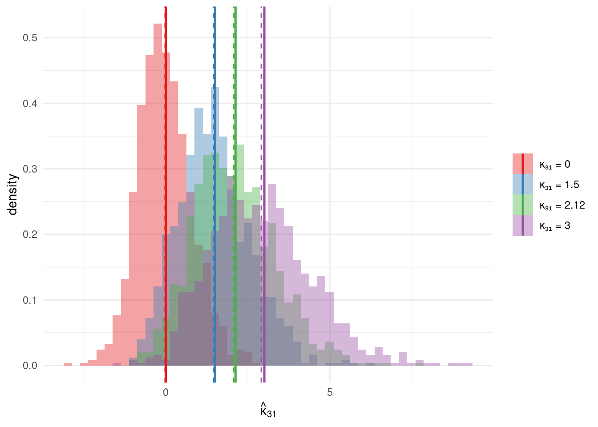
8.3 Estimating \(\kappa_{22}\) via Moments
Under the ECE model \(X_i = \theta_{x,i} + \varepsilon_{x,i}\), \(Y_i = \theta_{y,i} + \varepsilon_{y,i}\) with iid mean-zero errors, define \(\kappa_{22} = E[\varepsilon_{x,i}^2\varepsilon_{y,i}^2]/(\sigma_x^2\sigma_y^2)\), which equals 1 under independence. Write \(T_k(\theta_x, \theta_y) = \sum_{i=1}^n (\theta_{x,i} - \theta_{x,i+k})(\theta_{y,i} - \theta_{y,i+k})\) for the signal-difference inner product and \[ \boxed{T_k^{(2)}(X, Y) = \sum_{i=1}^n (X_i - X_{i+k})^2(Y_i - Y_{i+k})^2} \] for its squared analog (applicable to any pair of sequences).
The strategy is to compute \(E[T_k^{(2)}(X, Y)]\) exactly and solve for \(\kappa_{22}\).
Lemma: \(\operatorname{Cov}\bigl((X_i - X_{i+k})^2,\,(Y_i - Y_{i+k})^2\bigr)\)
Write \(X_i - X_{i+k} = (\theta_{x,i} - \theta_{x,i+k}) + (\varepsilon_{x,i} - \varepsilon_{x,i+k})\) and \(Y_i - Y_{i+k} = (\theta_{y,i} - \theta_{y,i+k}) + (\varepsilon_{y,i} - \varepsilon_{y,i+k})\). Since the signal differences are constants, \[ \begin{aligned} &\operatorname{Cov}\bigl((X_i-X_{i+k})^2,\,(Y_i-Y_{i+k})^2\bigr) \\ &\quad= 4(\theta_{x,i}-\theta_{x,i+k})(\theta_{y,i}-\theta_{y,i+k})\operatorname{Cov}(\varepsilon_{x,i}-\varepsilon_{x,i+k},\,\varepsilon_{y,i}-\varepsilon_{y,i+k}) \\ &\quad\phantom{=}\; + 2(\theta_{x,i}-\theta_{x,i+k})\operatorname{Cov}(\varepsilon_{x,i}-\varepsilon_{x,i+k},\,(\varepsilon_{y,i}-\varepsilon_{y,i+k})^2) \\ &\quad\phantom{=}\; + 2(\theta_{y,i}-\theta_{y,i+k})\operatorname{Cov}((\varepsilon_{x,i}-\varepsilon_{x,i+k})^2,\,\varepsilon_{y,i}-\varepsilon_{y,i+k}) \\ &\quad\phantom{=}\; + \operatorname{Cov}((\varepsilon_{x,i}-\varepsilon_{x,i+k})^2,\,(\varepsilon_{y,i}-\varepsilon_{y,i+k})^2). \end{aligned} \] The four pieces:
\(\operatorname{Cov}(\varepsilon_{x,i}-\varepsilon_{x,i+k},\,\varepsilon_{y,i}-\varepsilon_{y,i+k}) = \sigma_{xy} + \sigma_{xy} = 2\sigma_{xy}\).
\(\operatorname{Cov}(\varepsilon_{x,i}-\varepsilon_{x,i+k},\,(\varepsilon_{y,i}-\varepsilon_{y,i+k})^2) = 0\): since \(E[\varepsilon_{x,i}-\varepsilon_{x,i+k}] = 0\), this equals \(E[(\varepsilon_{x,i}-\varepsilon_{x,i+k})(\varepsilon_{y,i}-\varepsilon_{y,i+k})^2]\). Swapping \(i \leftrightarrow i+k\) negates \(\varepsilon_{x,i}-\varepsilon_{x,i+k}\) but fixes \((\varepsilon_{y,i}-\varepsilon_{y,i+k})^2\); since the pairs are iid the expectation is unchanged, so it equals its own negative and must be 0. By symmetry \(\operatorname{Cov}((\varepsilon_{x,i}-\varepsilon_{x,i+k})^2,\,\varepsilon_{y,i}-\varepsilon_{y,i+k}) = 0\).
For \(\operatorname{Cov}((\varepsilon_{x,i}-\varepsilon_{x,i+k})^2,\,(\varepsilon_{y,i}-\varepsilon_{y,i+k})^2)\): expanding using independence between time \(i\) and time \(i+k\) (and mean-zero errors), \[ E[(\varepsilon_{x,i}-\varepsilon_{x,i+k})^2(\varepsilon_{y,i}-\varepsilon_{y,i+k})^2] = 2E[\varepsilon_{x}^2\varepsilon_{y}^2] + 2\sigma_x^2\sigma_y^2 + 4\sigma_{xy}^2 = 2\kappa_{22}\sigma_x^2\sigma_y^2 + 2\sigma_x^2\sigma_y^2 + 4\sigma_{xy}^2, \] while \(E[(\varepsilon_{x,i}-\varepsilon_{x,i+k})^2]E[(\varepsilon_{y,i}-\varepsilon_{y,i+k})^2] = 4\sigma_x^2\sigma_y^2\), so \(\operatorname{Cov}((\varepsilon_{x,i}-\varepsilon_{x,i+k})^2,\,(\varepsilon_{y,i}-\varepsilon_{y,i+k})^2) = 2(\kappa_{22}-1)\sigma_x^2\sigma_y^2 + 4\sigma_{xy}^2\).
Combining: \[ \operatorname{Cov}\bigl((X_i-X_{i+k})^2,\,(Y_i-Y_{i+k})^2\bigr) = 8\sigma_{xy}(\theta_{x,i}-\theta_{x,i+k})(\theta_{y,i}-\theta_{y,i+k}) + 2(\kappa_{22}-1)\sigma_x^2\sigma_y^2 + 4\sigma_{xy}^2. \qquad\square \]
Lemma: \(E[T_k^{(2)}(X, Y)]\)
Exact expectation. Applying \(E[AB] = \operatorname{Cov}(A,B) + E[A]E[B]\) to each term and summing, using the lemma and \(E\!\left[\sum_i(X_i-X_{i+k})^2\right] = T_k(\theta_x,\theta_x) + 2n\sigma_x^2\): \[ \begin{aligned} E[T_k^{(2)}(X, Y)] &= 2n(\kappa_{22}-1)\sigma_x^2\sigma_y^2 + 8\sigma_{xy}T_k(\theta_x,\theta_y) + 4n\sigma_{xy}^2 \\ &\quad + T_k^{(2)}(\theta_x, \theta_y) + 2\sigma_y^2 T_k(\theta_x,\theta_x) + 2\sigma_x^2 T_k(\theta_y,\theta_y) + 4n\sigma_x^2\sigma_y^2. \end{aligned} \]
Simulation: Verifying \(E[T_k^{(2)}(X, Y)]\)
We simulate 1000 datasets from scenario 2 with \(n = 500\) observations, \(L = 4\) change points (frequent relative to \(n\)), exponential errors, and heterogeneous marginal variances (\(\sigma_x^2 = 4\), \(\sigma_y^2 = 0.25\)). For each dataset we compute \(T_2^{(2)}(X, Y)\) and compare its distribution to the formula value (red line).
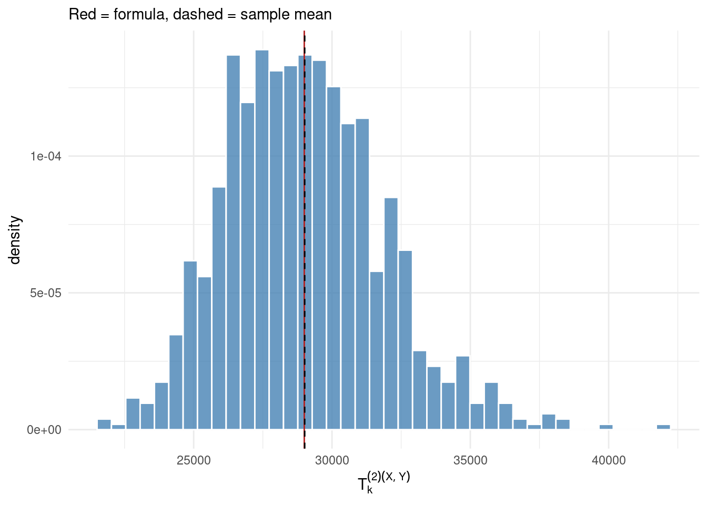
Remark
As with \(2T_1(\theta_x,\theta_y) - T_2(\theta_x,\theta_y) = 0\), we have \(2T_1^{(2)}(\theta_x,\theta_y) - T_2^{(2)}(\theta_x,\theta_y) = 0\).
Linear combination. Applying the exact expectation at \(k=1\) and \(k=2\) and forming \(2E[T_1^{(2)}(X,Y)] - E[T_2^{(2)}(X,Y)]\), all \(\theta\)-dependent terms vanish by the remark and the standard property applied to \((X,X)\) and \((Y,Y)\): \[ 2E[T_1^{(2)}(X,Y)] - E[T_2^{(2)}(X,Y)] = \boxed{2n(\kappa_{22}+1)\sigma_x^2\sigma_y^2 + 4n\sigma_{xy}^2.} \]
Solving for \(\kappa_{22}\): \[ \kappa_{22} = \frac{2E[T_1^{(2)}(X,Y)] - E[T_2^{(2)}(X,Y)]}{2n\sigma_x^2\sigma_y^2} - \frac{2\sigma_{xy}^2}{\sigma_x^2\sigma_y^2} - 1. \]
Plugging in estimates: \[ \boxed{ \hat\kappa_{22} = \frac{2T_1^{(2)}(X,Y) - T_2^{(2)}(X,Y)}{2n\hat\sigma_x^2\hat\sigma_y^2} - \frac{2\hat\sigma_{xy}^2}{\hat\sigma_x^2\hat\sigma_y^2} - 1. } \]
Simulation: Verifying \(\hat\kappa_{22}\) (Lag Product)
We simulate 10,000 datasets from scenario 2 with \(L = 4\) change points, exponential errors, and heterogeneous marginal variances (\(\sigma_x^2 = 4\), \(\sigma_y^2 = 0.25\)). The sample mean of \(\hat\kappa_{22}\) (dashed) should fall on the true value (red).
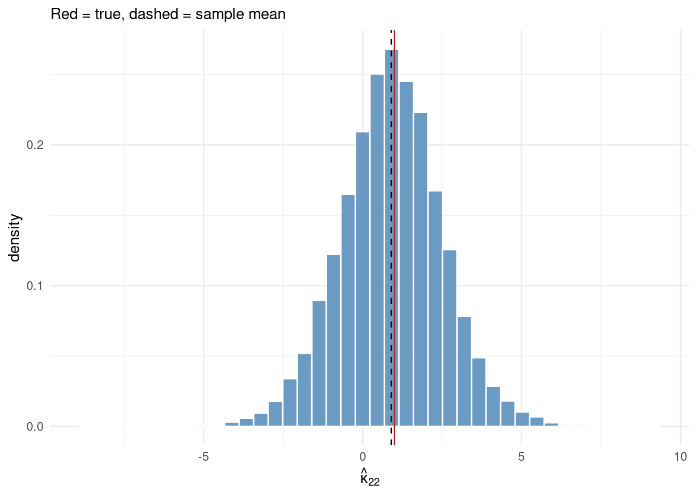
8.4 Method of Moments via \(S_i\) Terms
Recall from the multiplier bootstrap that \[S_i = \frac{s_i^{(1)} + s_{i+1}^{(1)} - s_i^{(2)}}{2}, \qquad s_i^{(k)} = (X_i - X_{i+k})(Y_i - Y_{i+k}),\] satisfies \(E[S_i] = \sigma_{xy}\) regardless of change-point amplitudes. The same construction applied to each series separately gives \[S_{xx,i} = \frac{(X_i-X_{i+1})^2 + (X_{i+1}-X_{i+2})^2 - (X_i-X_{i+2})^2}{2}, \qquad S_{yy,i} = \frac{(Y_i-Y_{i+1})^2 + (Y_{i+1}-Y_{i+2})^2 - (Y_i-Y_{i+2})^2}{2},\] with \(E[S_{xx,i}] = \sigma_x^2\) and \(E[S_{yy,i}] = \sigma_y^2\) at every index, change points included.
These terms play the role of \(\varepsilon_{x,i}^2\) and \(\varepsilon_{y,i}^2\) with change-point-robust constant means. The classical method-of-moments estimator for \(\kappa_{22} = E[\varepsilon_x^2\varepsilon_y^2]/(\sigma_x^2\sigma_y^2)\) is \[\hat\kappa_{22} = \frac{\frac{1}{n}\sum_i \varepsilon_{x,i}^2\,\varepsilon_{y,i}^2}{\hat\sigma_x^2\,\hat\sigma_y^2},\] where the numerator estimates \(E[\varepsilon_x^2\varepsilon_y^2]\) and the denominator estimates \(\sigma_x^2\sigma_y^2\). Replacing \(\varepsilon_{x,i}^2\) with \(S_{xx,i}\) and \(\varepsilon_{y,i}^2\) with \(S_{yy,i}\) gives the ECE analog: \[\hat\kappa_{22}^{\mathrm{MoM}} = \frac{\frac{1}{n}\sum_i S_{xx,i}\,S_{yy,i}}{\bar S_{xx}\,\bar S_{yy}}.\]
The \(S_i\) terms are autocorrelated at lags 1 and 2 (consecutive terms share observations), so \(\frac{1}{n}\sum S_{xx,i}S_{yy,i}\) has inflated variance relative to an i.i.d. average. The estimator remains consistent.
Simulation: Verifying \(\hat\kappa_{22}^{\mathrm{MoM}}\)
Since \(S_{xx,i}\) and \(S_{yy,i}\) are constructed from \((X,X)\) and \((Y,Y)\) separately, the estimator captures dependence between \(\varepsilon_x^2\) and \(\varepsilon_y^2\) without requiring \(\varepsilon_x \perp \varepsilon_y\). We verify this across three settings using scenario 2 with \(L = 4\) change points and Gaussian marginals.
Scenario 2, \(L = 4\), Gaussian independent errors. Under independence \(\kappa_{22} = 1\) regardless of marginals.
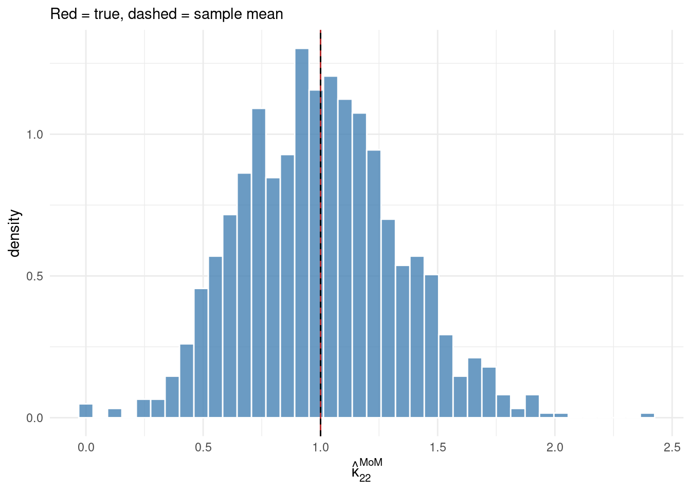
Using \(\varepsilon_y = (\varepsilon_x^2 - 1)/\sqrt{2}\) with \(\varepsilon_x \sim N(0,1)\), giving \(\sigma_{xy} = 0\) and \(\kappa_{22} = 5\).
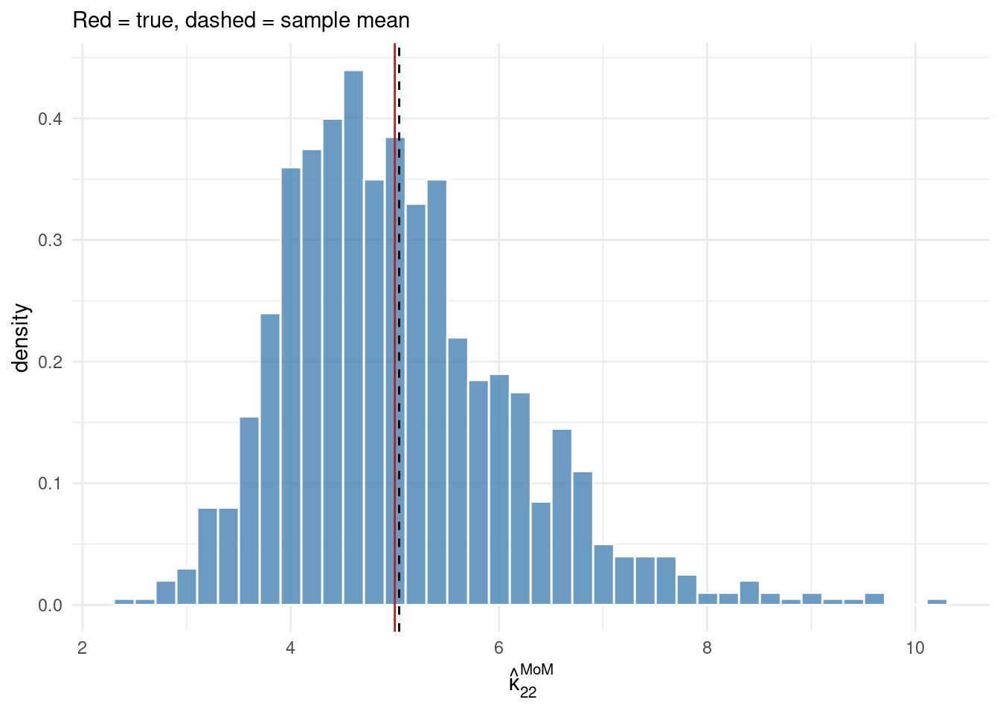
Using \(\varepsilon_y = \lambda(\varepsilon_x^2-1)/\sqrt{2} + \sqrt{1-\lambda^2}\,\eta\) with \(\varepsilon_x, \eta \stackrel{iid}{\sim} N(0,1)\), giving \(\sigma_{xy} = 0\) and \(\kappa_{22} = 1 + 4\lambda^2\).
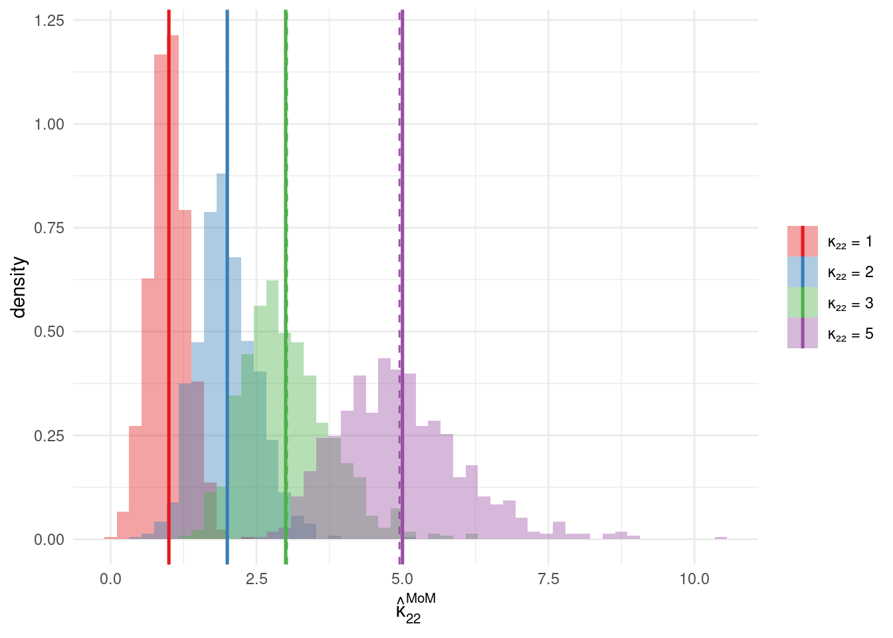
8.4.1 Estimating \(\kappa_{40}\)
Define \(T_k^{(2)}(X,X) = \sum_i (X_i - X_{i+k})^4\). Expanding the expectation and applying the change-point cancellation \(2T_1^{(m)}(\theta_x) = T_2^{(m)}(\theta_x)\) at both the second and fourth powers gives \[2E[T_1^{(2)}(X,X)] - E[T_2^{(2)}(X,X)] = 2n(\kappa_{40}+3)\sigma_x^4,\] so \[\hat\kappa_{40} = \frac{2T_1^{(2)}(X,X) - T_2^{(2)}(X,X)}{2n\hat\sigma_x^4} - 3.\]
Simulation: Verifying \(\hat\kappa_{40}\)
Scenario 2, \(L = 4\), Gaussian errors. Under Gaussianity \(\kappa_{40} = 3\).
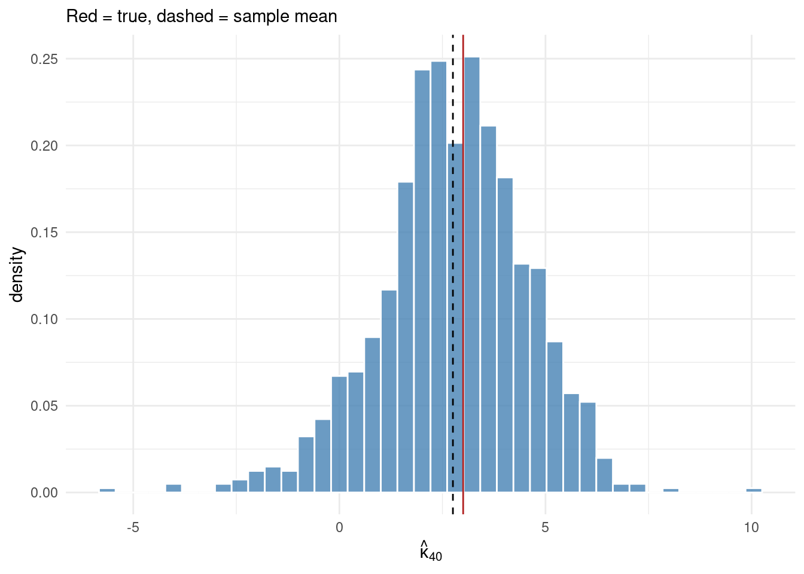
Scenario 2, \(L = 4\), exponential errors (\(\kappa_{40} = 9\)).
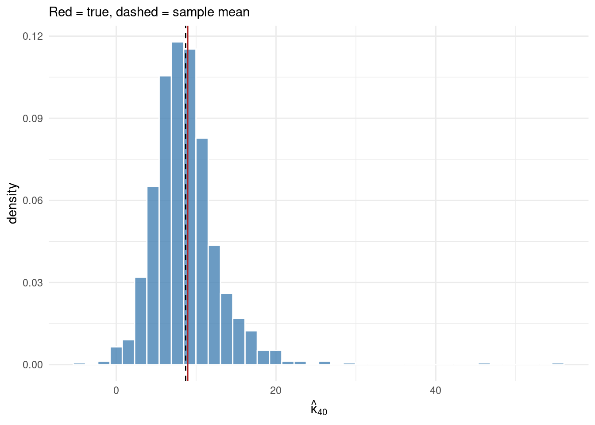
Using \(\varepsilon_x = \lambda(z^2-1)/\sqrt{2} + \sqrt{1-\lambda^2}\,w\) with \(z, w \stackrel{iid}{\sim} N(0,1)\), which gives \(\kappa_{40} = 12\lambda^4 + 3\).
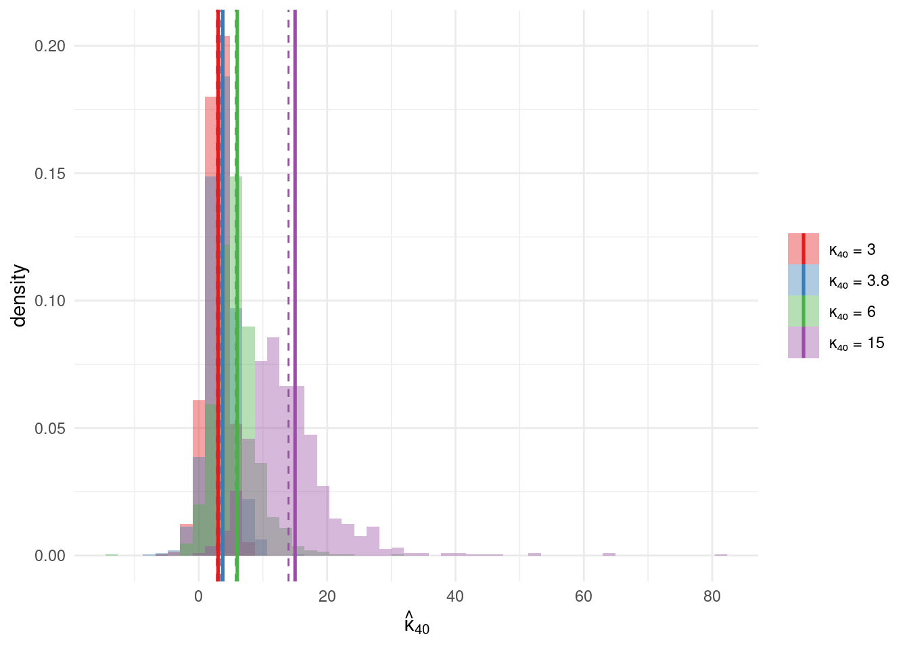
Alternative: Term-by-Term MoM via Quartic ECE Terms
Define the quartic ECE terms \[S_{xx,i}^{(4)} = \frac{(X_i - X_{i+1})^4 + (X_{i+1} - X_{i+2})^4 - (X_i - X_{i+2})^4}{2}.\]
Write \(X_i - X_{i+k} = h_i^{(k)} + e_i^{(k)}\) where \(h_i^{(k)} = \theta_{x,i} - \theta_{x,i+k}\) and \(e_i^{(k)} = \varepsilon_{x,i} - \varepsilon_{x,i+k}\). Expanding: \[(h_i^{(k)} + e_i^{(k)})^4 = (h_i^{(k)})^4 + 4(h_i^{(k)})^3 e_i^{(k)} + 6(h_i^{(k)})^2(e_i^{(k)})^2 + 4h_i^{(k)}(e_i^{(k)})^3 + (e_i^{(k)})^4.\] Taking expectations, the odd cross-terms \(4(h_i^{(k)})^3 e_i^{(k)}\) and \(4h_i^{(k)}(e_i^{(k)})^3\) vanish: \(E[e_i^{(k)}] = 0\) trivially, and by iid (even for asymmetric distributions), \[E\bigl[(e_i^{(k)})^3\bigr] = E[\varepsilon_x^3] - E[\varepsilon_x^3] = 0.\] The remaining three groups each cancel:
Pure signal: \[(h_i^{(1)})^4 + (h_{i+1}^{(1)})^4 - (h_i^{(2)})^4 = 0\] by the change-point argument (min segment length 2 forces \(h_i^{(1)} = h_i^{(2)}\) and \(h_{i+1}^{(1)} = 0\), or vice versa).
Signal–noise cross term: \(E[6h^2 e^2] = 12\sigma_x^2(h_i^{(k)})^2\), so the combination gives \[(h_i^{(1)})^2 + (h_{i+1}^{(1)})^2 - (h_i^{(2)})^2 = 0\] by the quadratic ECE cancellation.
Pure noise: For any \(k \geq 1\), \(E[(e_i^{(k)})^4] = (2\kappa_{40}+6)\sigma_x^4\) by iid, so the combination gives \[\tfrac{1}{2}\bigl[(2\kappa_{40}+6) + (2\kappa_{40}+6) - (2\kappa_{40}+6)\bigr]\sigma_x^4 = (\kappa_{40}+3)\sigma_x^4.\]
Hence \(S_{xx,i}^{(4)}\) has constant mean at every index: \[E\bigl[S_{xx,i}^{(4)}\bigr] = (\kappa_{40}+3)\sigma_x^4.\]
The residual \(+3\) arises because \(S_{xx,i}\) shares \(\varepsilon_{x,i+1}\) across its two factors. Since \(S_{xx,i}\) and \(S_{xx,i+3}\) use non-overlapping observations, \(E[S_{xx,i}\cdot S_{xx,i+3}] = \sigma_x^4\) at every index. Subtracting three times this lag-3 product gives constant mean \(\kappa_{40}\sigma_x^4\): \[\hat\kappa_{40}^{\mathrm{MoM}} = \frac{\frac{1}{n}\sum_i \bigl[S_{xx,i}^{(4)} - 3\,S_{xx,i}\,S_{xx,i+3}\bigr]}{\bar S_{xx}^2}.\]
With circular indexing \(\sum_i S_{xx,i}^{(4)} = (2T_1^{(2)}(X,X) - T_2^{(2)}(X,X))/2\), so this is algebraically identical to the regression formula above when \(\tfrac{1}{n}\sum S_{xx,i}S_{xx,i+3}\) is replaced by \(\bar S_{xx}^2\).
Simulation: Verifying \(\hat\kappa_{40}^{\mathrm{MoM}}\)
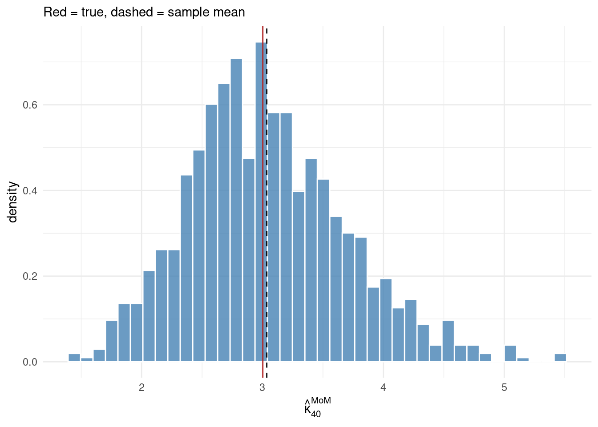
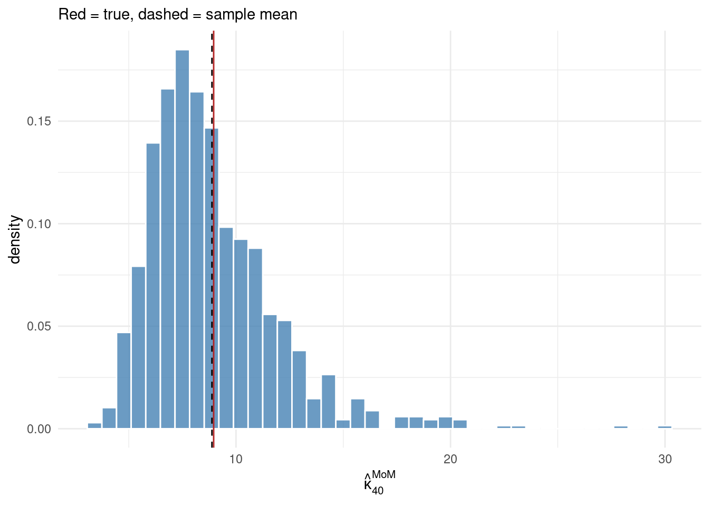
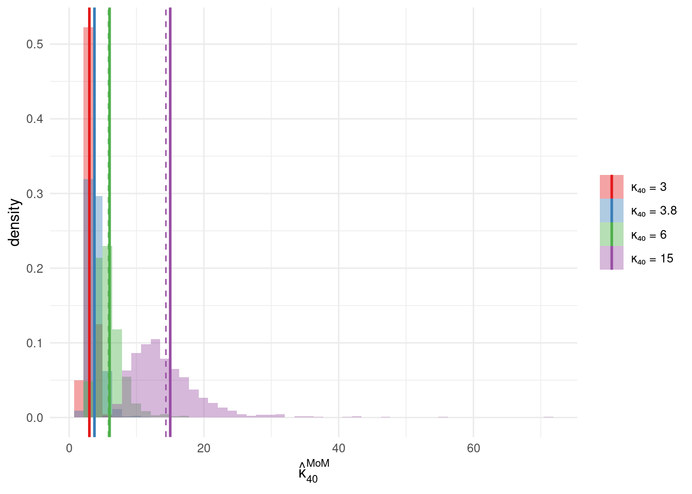
Numerical Results: Comparing \(\hat\kappa_{40}\) Estimators
The regression and MoM estimators are algebraically equivalent up to the lag-3 bias correction in the numerator. We compare their variance across scenarios.
| Scenario | κ₄₀ | Var(Regression) | Var(MoM) |
|---|---|---|---|
| Scenario 1, Normal | 3.00 | 0.4362 | 0.6957 |
| Scenario 1, Exponential | 8.96 | 8.0262 | 9.1049 |
| Scenario 2, Normal | 3.00 | 3.5200 | 4.4378 |
| Scenario 2, Exponential | 8.96 | 15.9280 | 17.6489 |
| Scenario 2 (amp = 2), Exp. | 8.96 | 112.1070 | 121.2603 |
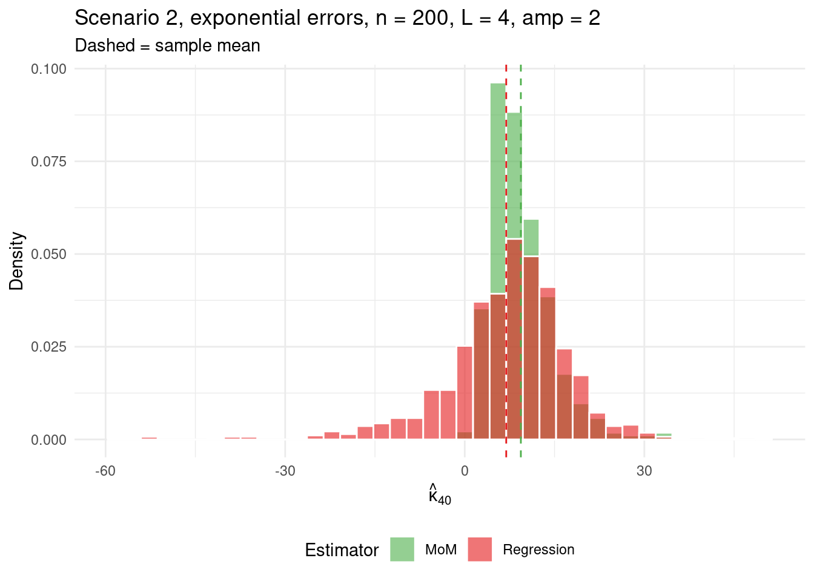
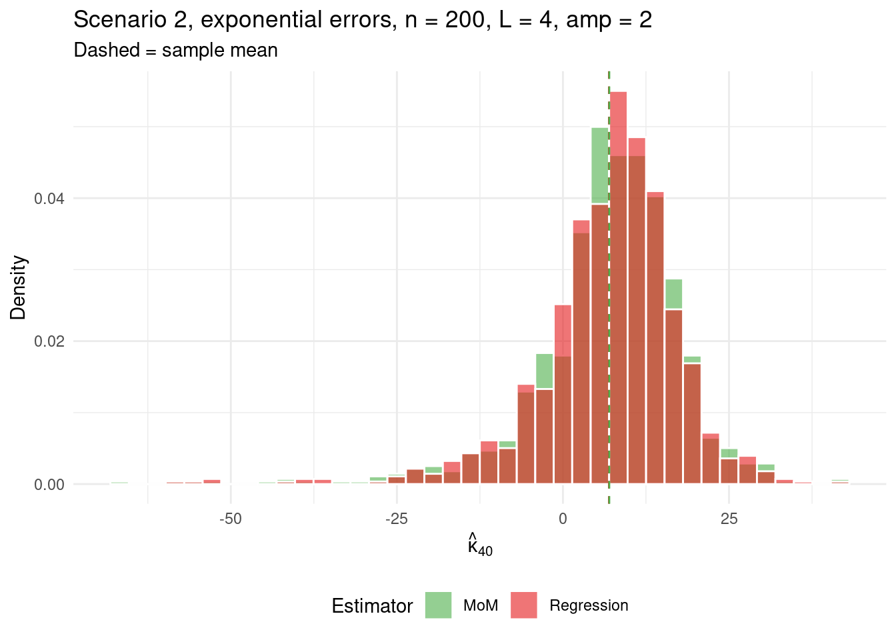
8.4.2 Estimating \(\kappa_{31}\)
Define the cubic-linear ECE terms \[T_i = \frac{t_i^{(1)} + t_{i+1}^{(1)} - t_i^{(2)}}{2}, \qquad t_i^{(k)} = (X_i - X_{i+k})^3(Y_i - Y_{i+k}).\]
The same change-point cancellation gives constant mean at every index: \(E[T_i] = \kappa_{31}\sigma_x^3\sigma_y + 3\sigma_x^2\sigma_{xy}\). Solving, \[\hat\kappa_{31} = \frac{\bar T - 3\hat\sigma_x^2\hat\sigma_{xy}}{\bar S_{xx}^{3/2}\,\bar S_{yy}^{1/2}}.\]
Simulation: Verifying \(\hat\kappa_{31}\)
Scenario 2, \(L = 4\), Gaussian independent errors. Under independence \(\kappa_{31} = 0\).
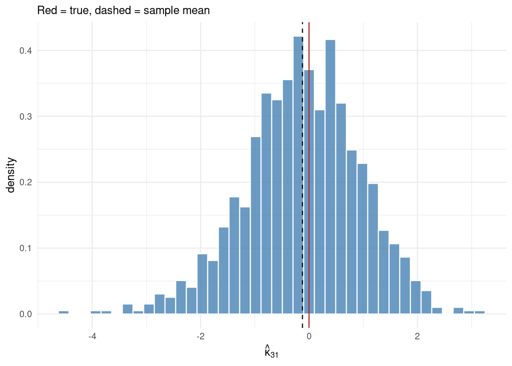
Using \(\varepsilon_y = \varepsilon_x\) with \(\varepsilon_x \sim N(0,1)\), giving \(\sigma_{xy} = \sigma_x^2 = 1\) and \(\kappa_{31} = 3\).
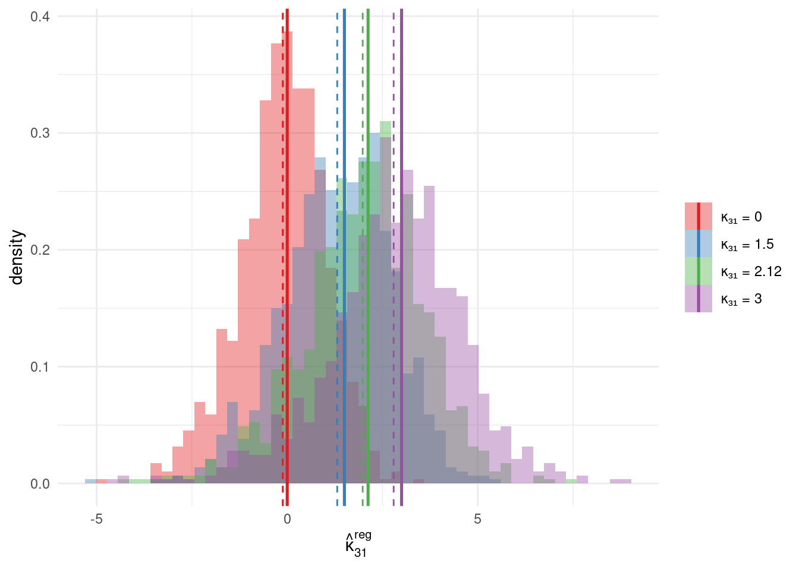
Using \(\varepsilon_y = \lambda\varepsilon_x + \sqrt{1-\lambda^2}\,\eta\) with \(\varepsilon_x, \eta \stackrel{iid}{\sim} N(0,1)\), giving \(\kappa_{31} = 3\lambda\).
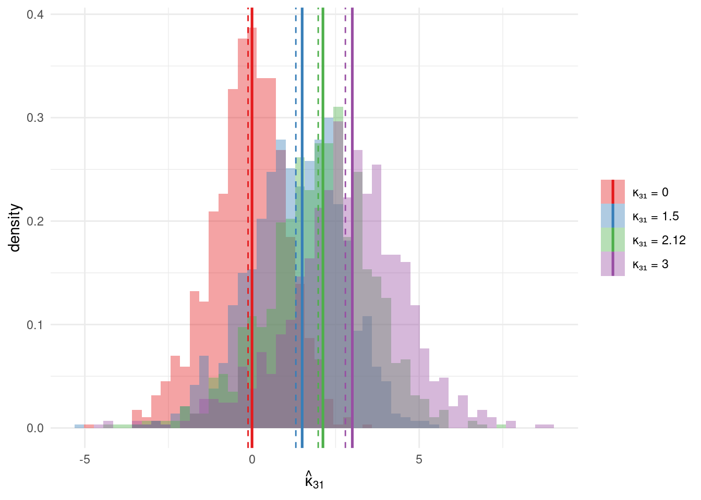
8.5 Numerical Results: Estimating \(\kappa_{22}\)
No single estimator dominates: the regression estimator has lower variance in most scenarios, but the matrix estimator wins when change-point amplitude is large.
| Scenario | Var(k22-Regression) | Var(k22-Covariance) | Var(k22-MoM) |
|---|---|---|---|
| Scenario 1, Normal | 0.07 | 0.21 | 0.03 |
| Scenario 1, Exponential | 0.41 | 0.60 | 0.13 |
| Scenario 1 (r = 0.5), Exp. | 1.36 | 1.99 | 1.08 |
| Scenario 2, Normal | 0.66 | 0.50 | 0.11 |
| Scenario 2, Exponential | 1.14 | 1.03 | 0.30 |
| Scenario 2 (amp = 2), Exp. | 19.70 | 5.61 | 1.27 |
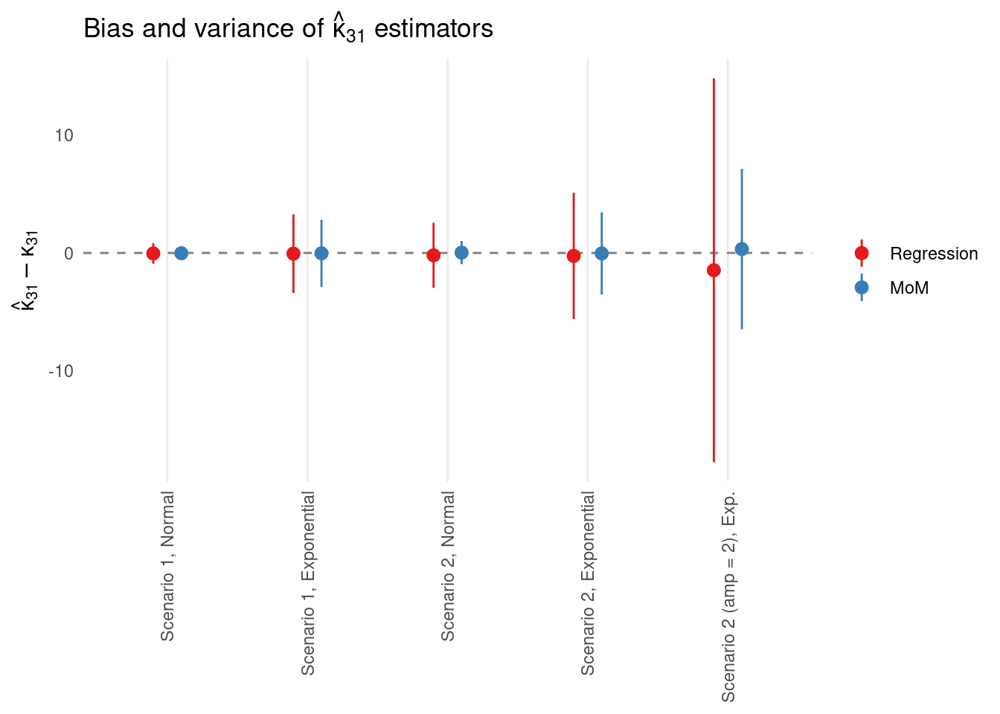
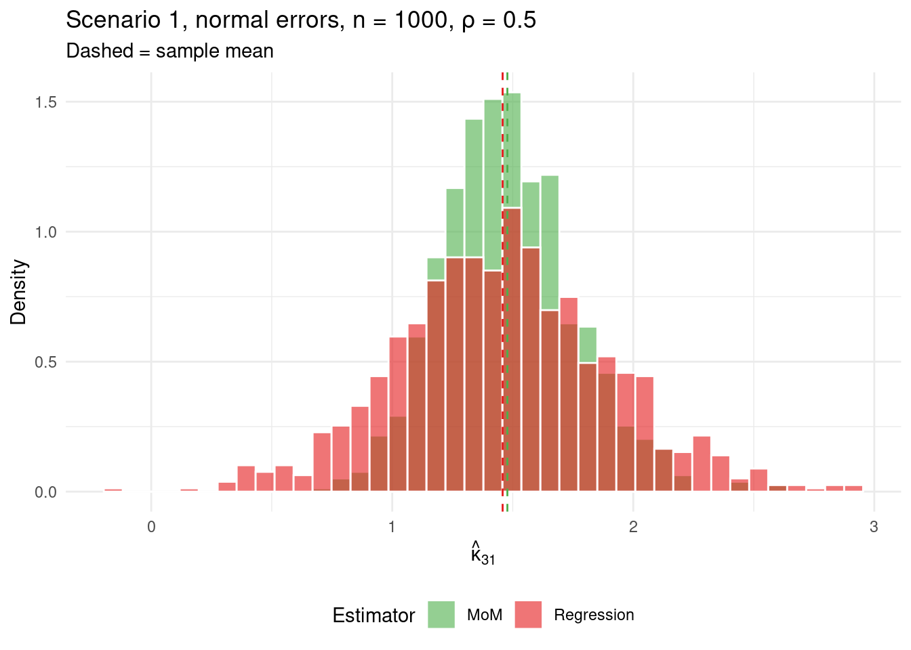
8.6 Kappa Table
| Distribution | \(\kappa_{40}\) | \(\kappa_{04}\) | \(\kappa_{22}\) | \(\kappa_{31}\) | \(\kappa_{13}\) | \(\operatorname{SE}(\hat{\rho})\) |
|---|---|---|---|---|---|---|
| Normal | 3.0026 | 3.0004 | 1.0007 | -0.0007 | 0.0001 | 0.0592 |
| Exponential | 8.9577 | 9.0051 | 1.0026 | 0.0074 | -0.0012 | 0.0592 |
| Log-Normal | 129.5878 | 115.4658 | 1.0233 | -0.1718 | 0.4411 | 0.0594 |
| t (df = 5) | 8.0653 | 7.9954 | 1.0001 | 0.0287 | 0.0075 | 0.0592 |
For \(\rho = 0.5\), we get
| Distribution | \(\kappa_{40}\) | \(\kappa_{04}\) | \(\kappa_{22}\) | \(\kappa_{31}\) | \(\kappa_{13}\) | \(\operatorname{SE}(\hat{\rho})\) |
|---|---|---|---|---|---|---|
| Normal | 3.0026 | 3.0010 | 1.5006 | 1.5007 | 1.5007 | 0.0444 |
| Exponential | 8.9577 | 6.7548 | 2.9978 | 4.4853 | 2.2517 | 0.0489 |
| Log-Normal | 129.5878 | 74.6985 | 33.0156 | 64.6451 | 17.5245 | 0.1012 |
| t (df = 5) | 8.0653 | 6.1488 | 2.7912 | 4.0575 | 2.1568 | 0.0482 |
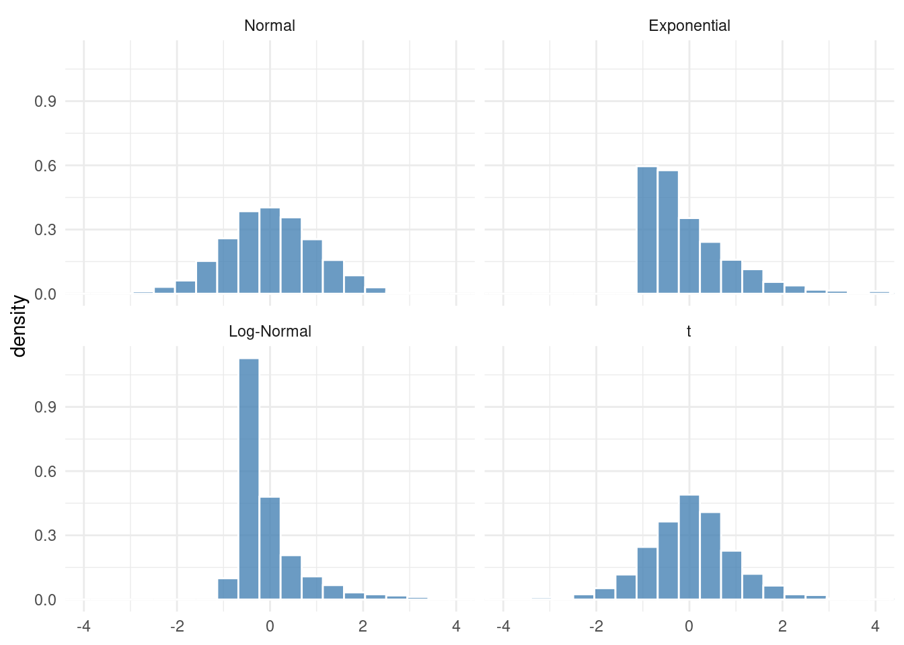